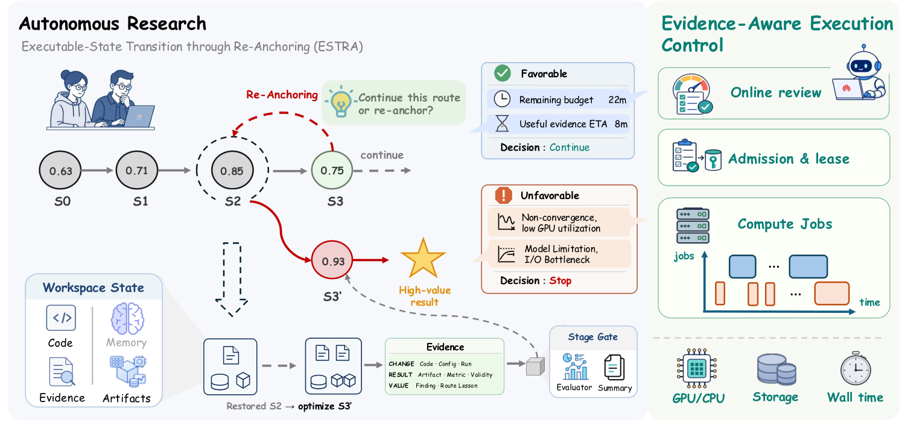

ScienceFlow: Recoverable Executable States for Long-Horizon Autoresearch
TL;DR
- ScienceFlow (arXiv 2608.14354; Mingming Zhao, Jiqian Dong, Kangping Xu, et al. — Huawei Noah's Ark, per the project page) organizes long-horizon autoresearch into research segments grounded in executable workspaces: progress is checkpointed as recoverable executable states \(s_v=(W_v, m_v, e_v, \ell_v)\) — workspace, memory, evidence, resource ledger — in an archive the agent can re-anchor to.
- Two governing mechanisms: ESTRA (Executable-State Transition through Re-Anchoring) decides at each segment boundary whether to continue from the live state or rewind to an archived one, and whether to extend or redirect the trajectory; an evidence-aware execution controller gates every expensive job through an admission LLM ({RUN_NOW, OBSERVE_THEN_RUN, PENDING, REPLAN}) and reviews running jobs ({CONTINUE, TIMEBOX, STOP_AND_REPLAN}).
- Results: SOTA 70.22 ± 1.18% Any-Medal on the full 75-task MLE-bench in a 24-hour budget with a DeepSeek-V4-Flash-Preview backbone — +4.92pp over the best prior report — plus matching the strongest published circle-packing and ratio-minimization results, improving the best Hermite-based uncertainty bound by 2.5%, 3rd place on KTTSP-hard, and the best group-balanced score (54.41) on SciModelingBench.
Why this matters
The failure mode of current autoresearch agents isn't ideation — it's irreversibility. A run commits to a direction, the context fills with the residue of that commitment, and when the direction turns out to be a dead end there is nothing to go back to: the promising intermediate state three hours ago exists only as prose in a compacted history. Add greedy compute usage (every idea runs at full budget) and you get the pattern anyone who has watched a 24-hour MLE-bench run knows: early promise, mid-run thrash, late-run salvage.
ScienceFlow's move is to treat the research process as the object under management. Recoverable executable states are effectively version control for research (workspace + memory + evidence + ledger, restorable exactly, not summarized); ESTRA is the branch policy; the admission/review controller is the scheduler. As the thread put it, the frontier shifts from smarter answers to persistent research processes — and the MLE-bench jump suggests a lot of the remaining headroom on these benchmarks is process management, not model intelligence: the backbone here is a cheap fast model, not a frontier reasoner.
For this tracker's harness-optimization thread, this is the strongest recent evidence that state management is a first-class harness axis, alongside verification and skill curation.
The core idea
The system optimizes which archived state to end on, subject to a resource budget. With archive \(\mathcal{A}_T\), goal-conditioned value \(V_{\mathcal{G}}\), per-segment resource spend \(\rho_t\) and budget \(B\):
where a state bundles the workspace \(W_v\), accumulated memory \(m_v\), evidence \(e_v=V_{\mathcal{G}}(s_v)\) (validated results attached to that state), and resource records \(\ell_v\) from the ledger at checkpoint time.
Within a segment \(n\), a worker runs an ordinary reason–act loop — \((r_{n,j},\alpha_{n,j})\sim\pi_{\mathrm{LLM}}(\cdot\mid P_n,h_{n,j})\), \((o_{n,j},W_{n,j+1})=\operatorname{Exec}(\alpha_{n,j};W_{n,j})\) — checkpointing states as it goes. At the boundary, ESTRA chooses an anchor and a direction:
The next segment's context is assembled, not inherited: a stable prefix (worker/runtime/tools/task prompts, enabling prefix caching) plus an anchor-specific block built from folded memory, unfolded detail, evidence, and a workspace view:
where memory supports \(\operatorname{Add}\) (accumulate), \(\operatorname{Fold}(m_v;B_{\mathrm{mem}})\) (compress to a budget, keeping an index \(\iota_v\)), and \(\operatorname{Unfold}(m_v,\iota_v,z_v)\) (retrieve full history on demand for anchor selection). Rewinding is exact restoration of the archived workspace, not a textual reconstruction.
How it works

Figure 2 from the paper: workers operate over recoverable executable states; ESTRA governs transitions between research segments; the evidence-aware controller allocates physical jobs against the resource ledger.
# ScienceFlow control loop (one research run, budget B)
archive A <- {}; P <- stable prefix + task; W <- fresh workspace
for segment n = 1, 2, ...:
# forward research within the segment
repeat:
(reasoning r, action a) ~ LLM(P, history h)
(obs o, W) <- Exec(a; W) # code edits, runs, analysis
h <- h ++ (r, a, o)
if milestone: checkpoint s=(W, m, e, ledger) into A # recoverable state
if action needs heavy compute (training job, big search):
d <- AdmitLLM(job, resources R_t, budget B_t) # preflight + review
RUN_NOW | OBSERVE_THEN_RUN | PENDING | REPLAN
while job runs: Review(y_0:t, g_t; B_t) in
{CONTINUE, TIMEBOX, STOP_AND_REPLAN}
until segment boundary (stage gate / stall / budget event)
# ESTRA: pick where and how to continue
Unfold memories of candidate anchors in A
(anchor a_n, dir d_n) <- ESTRA(live state vs archive; evidence, ledger)
W <- ExactRestore(a_n.workspace); P <- P_stable ++ Fold(a_n.memory) ++ dir
return argmax_{s in A} V_G(s) subject to spend <= B
Evidence-aware execution. Before any expensive job launches, a preflight result plus the resource request and research-value information go to an isolated admission LLM. RUN_NOW acquires a device lease atomically; OBSERVE_THEN_RUN launches with a short early-review window; PENDING queues; REPLAN bounces the job back to the worker. Running jobs are reviewed online against validated progress, so a training run that has stopped improving gets TIMEBOXed rather than burning the remaining budget. A four-hour archival cutoff governs late-run anchoring on MLE-bench.
Results
- MLE-bench (full 75 tasks, 24h, ≤2 GPUs): ScienceFlow 70.22 ± 1.18% Any-Medal vs MLEvolve (Gemini-3.1-Pro-Preview) 65.30 ± 0.80, Iris (Claude-Opus-4.6) 64.90 ± 0.40, Famou-Agent 2.0 (Gemini-3-Pro-Preview) 64.44 ± 1.18, AIBuildAI (Claude-Opus-4.6) 63.11 ± 0.44; open-source ML-Master 2.0 (DeepSeek-V3.2-Speciale) 56.44 ± 2.47; earlier generation AIRA-dojo (o3) 31.60, R&D-Agent (o3+GPT-4.1) 30.22. Notably ScienceFlow's backbone (DeepSeek-V4-Flash-Preview) is the cheapest model in the top group.
- Backbone sensitivity: the harness holds up across GLM-5.1, openPangu-2.0-Pro, DeepSeek-V4-Flash-Preview, and DeepSeek-V4-Pro-Preview under the same two-worker/24h protocol, with distinct quality-throughput-cost trade-offs.
- Mathematical/engineering optimization: matches the strongest published circle-packing results (the AlphaEvolve → ShinkaEvolve → ThetaEvolve lineage, ~2.63598 for \(\sum_i r_i\), n=26) and ratio minimization; improves the best published Hermite-based uncertainty bound by 2.5%; ranks 3rd on SpOC4 KTTSP-hard, where the case study shows ESTRA rewinding an abandoned tail and cutting the route objective from 1321.9 to 393.2 days.
- Scientific modeling: best group-balanced score (54.41) on SciModelingBench across evaluated agents.
- Ablations/telemetry: state-matched re-anchoring and mechanism ablations attribute the gains to the archive/ESTRA machinery rather than the backbone (per Section 3.1.3; details worth reading in full).
How it connects
- AutoDesign: Meta-Harness Optimization (this list) — complementary layers: AutoDesign learns a better harness across runs from rollout failures; ScienceFlow manages state within a run. A meta-harness loop wrapped around ScienceFlow's archive telemetry is an obvious composition.
- AI Research Preference Models (this list) — Meta FAIR's RPM decides which candidate experiment deserves compute before running it; ScienceFlow's admission LLM plus online review is the same value-of-compute judgment implemented as a runtime contract. RPM's pilot-experiment budget maps to OBSERVE_THEN_RUN.
- Session Constraints / Lost in Compaction (this list) — that paper showed compaction silently drops standing rules; ScienceFlow's Fold/Unfold with exact workspace restoration is the structural fix generalized: never let lossy summaries be the only carrier of recoverable state.
- AlphaEvolve's matrix-multiplication record (this list, added today) — the discovery-side counterpart: AlphaEvolve shows what evolutionary autoresearch finds; ScienceFlow is about keeping any such search recoverable and budget-aligned over 24-hour horizons. Its circle-packing parity with the *Evolve lineage suggests the state-management framing subsumes a chunk of what population methods buy.
- SBCO (this list) — same skepticism of "smarter meta-agent" solutions: SBCO fixes the improver and learns verifiers; ScienceFlow fixes the worker and engineers the state/scheduling substrate.
Critical take
The headline +4.92pp needs its footnotes: the comparison table mixes backbones, and some baselines ran 12h or 36h per-task budgets rather than the standard 24h (the paper flags this itself). Cross-agent MLE-bench numbers are closer to "best reported configuration" than controlled comparison — though the backbone-sensitivity study partially answers this, and beating Claude-Opus-4.6- and Gemini-3.1-powered agents with a flash-tier model is the right direction of surprise. Second, \(V_{\mathcal{G}}\) — the value that decides both re-anchoring and job admission — is LLM-judged "validated progress"; on tasks with weaker ground truth than Kaggle leaderboards, evidence-aware control inherits every known LLM-judge pathology, and the paper's strongest domains are exactly the ones with hard external verifiers. Third, exact restoration is scoped to the workspace: consumed API quotas, wall-clock, and external-world side effects don't rewind, so ESTRA's "reversibility" is partial by construction. The abstraction still looks durably right — archive + re-anchoring + admission control is the harness pattern I'd expect to see copied first.
If you remember three things
- Represent research progress as recoverable executable states — workspace, memory, evidence, resource ledger — and make rewinding an exact restore, not a summary. Dead ends stop being fatal.
- Separate the loop that does research from the loop that decides where to continue from (ESTRA: live vs archived anchor, extend vs redirect) and the one that decides what deserves compute (admission + online review).
- Process management, not model strength, was the binding constraint: a flash-tier backbone under this harness set SOTA on full MLE-bench (70.22% Any-Medal, 24h) over frontier-model agents.